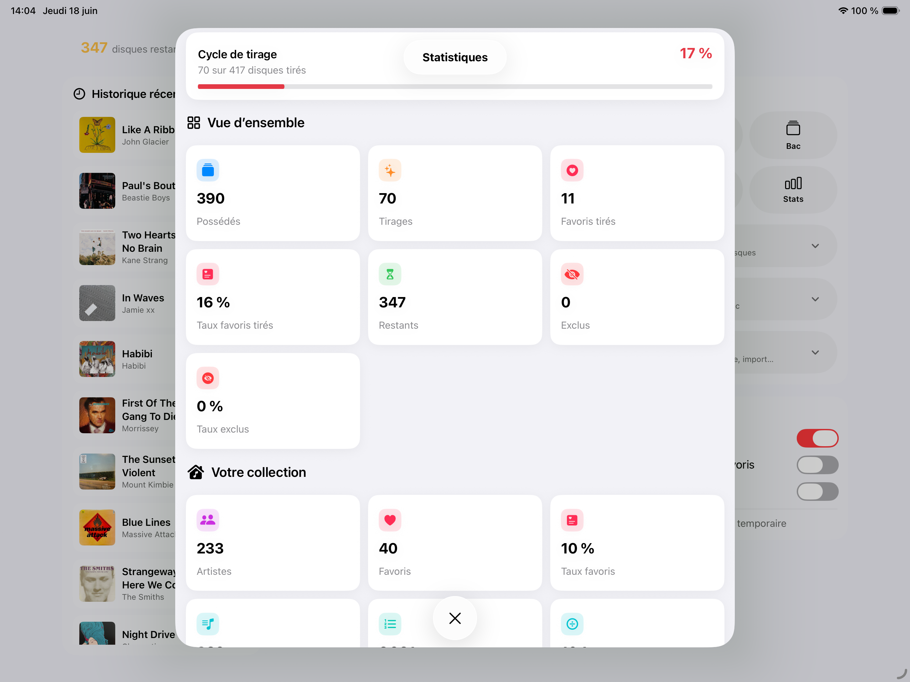
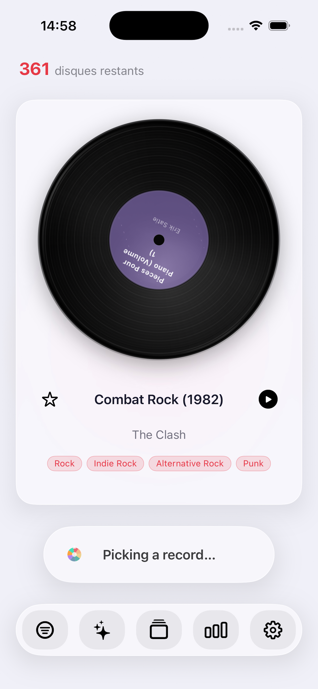

Record Picker v1.2
Record Picker कैटलॉगिंग, स्मार्ट चयन, डेटा समृद्धि, आँकड़े, बैकअप और सिस्टम साथियों को मिलाकर आपके संगीत संग्रह को फिर जीवित करता है.
नीचे का पृष्ठ संस्करण 1.2 की मुख्य सुविधाएँ दिखाता है, पहले आयात से अगले रिकॉर्ड चयन तक, आर्टवर्क, फिल्टर, डेटा गुणवत्ता और निर्यात टूल सहित.
सुविधाएँ
 संग्रह आयात
संग्रह आयातपूरा संगीत कैटलॉग
जब आरंभिक डेटा अधूरा हो तब भी उपयोगी संग्रह बनाएँ.
- CSV संग्रह आयात
- विनाइल, CD और एल्बम की मैनुअल प्रविष्टि
- कैमरे से बारकोड स्कैनिंग
- MusicBrainz और Discogs से मेटाडेटा खोज
- जानकारी पूरी करने के लिए संपादन योग्य रिकॉर्ड विवरण शीट

आर्टवर्क और दृश्य डेटाआर्टवर्क और दृश्य डेटा
अपने द्वारा खोजे या चुने गए आर्टवर्क के साथ संग्रह को ब्राउज़ करने में सुखद बनाए रखें.
- Cover Art Archive से आर्टवर्क खोज
- Photos या Files से मैनुअल आयात
- आर्टवर्क न होने पर वेब खोज
- मूल आर्टवर्क पुनर्स्थापित करें
- गुम आर्टवर्क और डेटा के लिए गुणवत्ता जाँच
 बड़े प्रारूप का चयन
बड़े प्रारूप का चयनस्मार्ट चयन
बिन से क्या चुना जा सकता है इस पर नियंत्रण बनाए रखते हुए अगला रिकॉर्ड चुनें.
- एनिमेटेड रैंडम चयन
- वर्ष, शैली, स्टाइल, पसंदीदा और उपलब्धता के अनुसार फिल्टर
- एक ही कलाकार का बहिष्करण
- पसंदीदा को प्राथमिकता दें या चयन को पसंदीदा तक सीमित करें
- रिकॉर्ड, कलाकार या मानदंड के लिए अस्थायी बहिष्करण

एनिमेटेड चयनमूड और प्लेबैक
Record Picker मूड के आधार पर चयन निर्देशित कर सकता है और आप क्या सुनते हैं उसका रिकॉर्ड रख सकता है.
- उपलब्ध होने पर स्थानीय Apple मॉडल के साथ मूड-आधारित चयन
- मॉडल उपलब्ध न होने पर स्थानीय मेटाडेटा आधारित मिलान
- चुने गए या चलाए गए रिकॉर्ड का हालिया इतिहास
- उपलब्ध होने पर Apple Music से प्लेबैक
- चाहे गए रिकॉर्ड पास रखने के लिए विशलिस्ट
 iPad बिन और फिल्टर
iPad बिन और फिल्टरब्राउज़िंग और संग्रह जानकारी
ऐप छोड़े बिना अपने संग्रह को ब्राउज़, जाँच और समझें.
- खोज, छँटाई और फिल्टर वाला रिकॉर्ड बिन
- iPhone और iPad के लिए अनुकूलित दृश्य
- बड़े कवर और तेज सूचियाँ
- संग्रह, चयन, पसंदीदा और बहिष्करण आँकड़े
- गुम ट्रैक, फॉर्मेट, लेबल, तारीख और डेटा की पहचान
 गुम ट्रैक, फॉर्मेट, लेबल, तारीख और डेटा की पहचान
गुम ट्रैक, फॉर्मेट, लेबल, तारीख और डेटा की पहचानबैकअप, ऑटोमेशन और गोपनीयता
उन्नत टूल आपके नियंत्रण में रहते हैं और संग्रह स्थानीय रूप से संग्रहीत रहता है.
- संग्रह बैकअप और पुनर्स्थापन
- पढ़ने योग्य CSV और JSON निर्यात
- Siri Shortcuts और सिस्टम क्रियाएँ
- Apple Watch साथी ऐप
- कोई उपयोगकर्ता खाता नहीं, कोई विज्ञापन नहीं, और आपका संग्रह रखने वाला कोई Record Picker सर्वर नहीं
App Store इतिहास
v1.2वर्तमान App Store संस्करण
18 जून 2026
- आयात, मैनुअल एल्बम प्रविष्टि और बारकोड स्कैनिंग के लिए पूरा संगीत कैटलॉग.
- एनिमेटेड रैंडम चयन, वर्ष फिल्टर, पसंदीदा, अस्थायी बहिष्करण, सुनने का इतिहास और संग्रह आँकड़े.
- उपलब्ध होने पर स्थानीय Apple मॉडल से मूड-आधारित चयन, अन्यथा संग्रह मेटाडेटा से ऑन-डिवाइस मिलान.
- MusicBrainz मेटाडेटा, Cover Art Archive आर्टवर्क या मैनुअल आर्टवर्क आयात, बैकअप/पुनर्स्थापन, Siri Shortcuts और Apple Watch साथी.
- संग्रह स्थानीय रूप से संग्रहीत रहता है; मेटाडेटा और आर्टवर्क खोज केवल तब होती है जब उपयोगकर्ता उन्हें शुरू करता है.
v1.1.1App Store सुधार
17 जून 2026
- अधिक सहज अनुभव के लिए इंटरफ़ेस और आंतरिक आधारों को सुधारा गया.
- बेहतर iPad समर्थन.
- समीक्षाओं के बेहतर उपयोग के साथ मूड-आधारित चयन.
- डेटा गुणवत्ता: रिकॉर्ड विवरण शीट, मैनुअल पंक्ति हटाना, Discogs/MusicBrainz खोज.
- गुम ट्रैक: MusicBrainz खोज के बाद Discogs खोज.